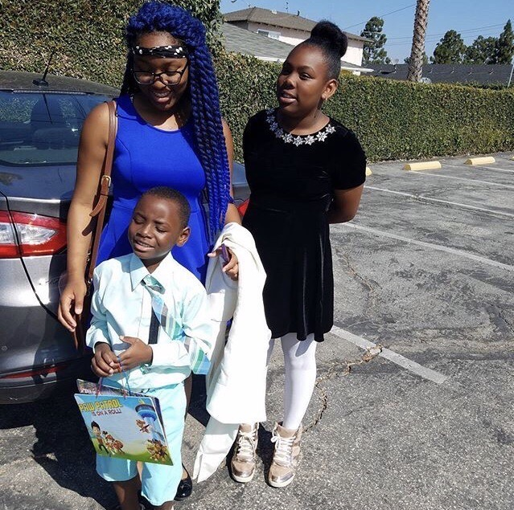

\
About Me
Likes
- Shopping
- Cheering
- Listening to Music
- Dancing
- Shoes
Dislikes
\
Fun Facts
I Like to go watch movies, shop and go out with my friends. Everytime I go out with friend or family I always have one crazy story to tell.
Shoes!!!
Family Time

The Goofy Side Of Me
Reflection
6/27/2017
Python and Scratch are similar to each other. You dont have much guidence on Python like Scratch. Making a loop on python is similar to creating a loop on scratch. Today debugging my program was difficult it was a new experience for me, it was very challenging but i got through it. I like that i had to figure it out and work through all of those difficulties. I also have guidence from my peers around me.